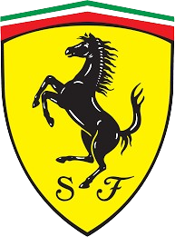
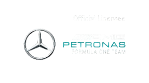

Team Ratings
McLaren Formula 1 Team

Scuderia Ferrari
Oracle Red Bull Racing

Mercedes-AMG Petronas Formula 1 Team

A motorsport in which different teams
compete in multiple Grand Prix races.
scroll to discover
Formula One (F1) is the highest level of international single-seater auto racing,
governed by the FIA (Fédération Internationale de l'Automobile).
It features high-performance, open-wheel cars competing in a series of Grand Prix races worldwide on circuits and city streets.
Teams, backed by major manufacturers, develop cutting-edge technology to achieve maximum speed and efficiency.
The sport is known for its intense competition, strategic pit stops, and elite drivers like Lewis Hamilton and Max Verstappen.
The F1 season culminates in a world championship for both drivers and constructors.
Circuit de Spa-Francorchamps
Spa-Francorchamps is a legendary Formula 1 track in Belgium, known for its long straights and iconic Eau Rouge turn. It spans 7.004 km with 19 turns. The lap record (1:41.252) was set by Lewis Hamilton in 2020. The track has hosted races since 1925, combining speed and technical complexity.

Circuit de Monaco
Circuit de Monaco is a world-famous Formula 1 street track known for its tight corners, elevation changes, and the iconic Fairmont Hairpin. It spans 3.337 km with 19 turns. The lap record (1:12.909) was set by Lewis Hamilton in 2021. Hosting races since 1929, it’s one of the most challenging circuits on the F1 calendar.

Silverstone
Silverstone Circuit, located in the UK, is one of Formula 1’s most historic tracks. It spans 5.891 km with 18 turns and is known for its high-speed corners like Maggots and Becketts. The lap record (1:27.097) was set by Max Verstappen in 2020. Hosting its first F1 race in 1950, Silverstone is home to the British Grand Prix.